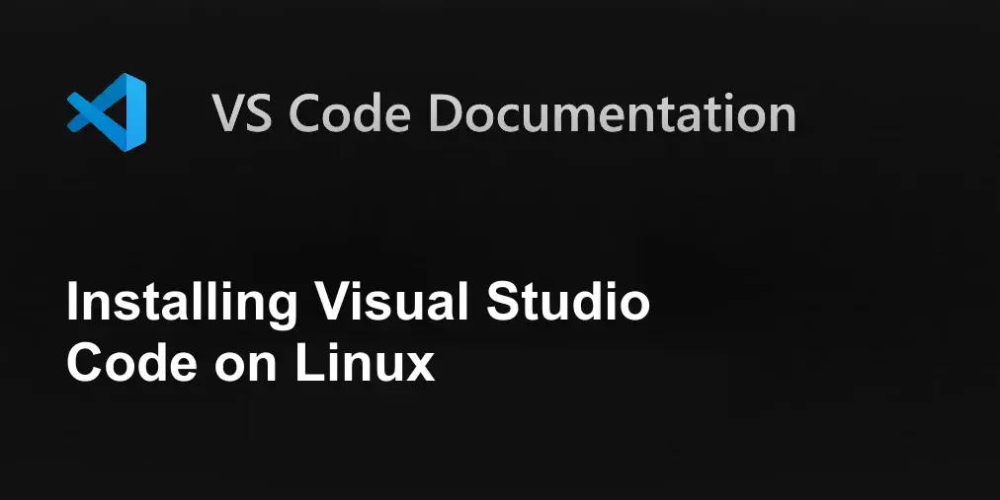
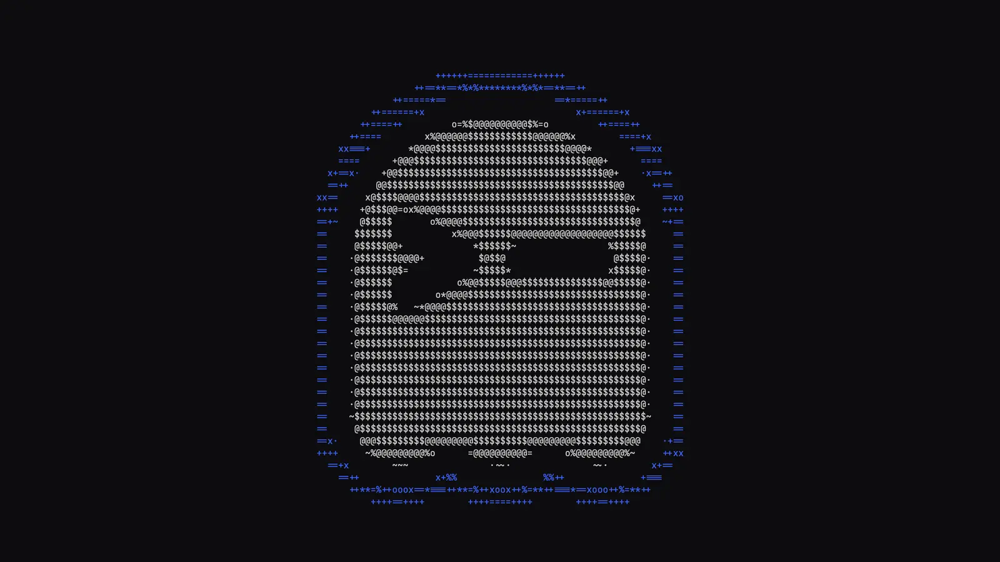
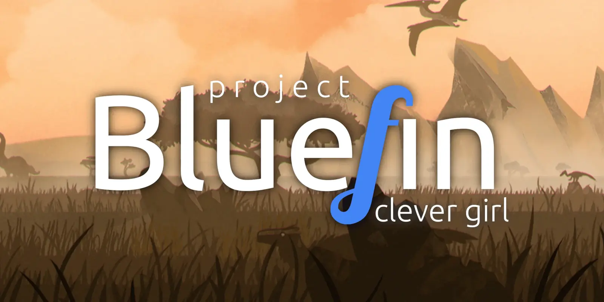

Six distribution families evaluated as a host for .NET 10 SDK, TypeScript/Node and Docker Compose, with Rider and VS Code on top.
- There is no longer one "Microsoft .NET repo for Linux". Since .NET 9,
packages.microsoft.comserves only distros that don't package .NET themselves [1] - 2 of 6 families install the .NET 10 SDK with zero added repositories [2][3]
- Every distro-built SDK is locked to the
.1xxfeature bandA - The JS half of the stack is fully distro-neutralG
- SELinux is the single largest practical difference for a Compose userC
Both land at ΣREPO = 3 hand-configured vendor repositories and both are on all four vendor test listsD. They differ only in which tax you pay: Ubuntu costs you the .1xx-only SDK bandA, Fedora costs you a :z/:Z edit on every Compose volumeC.
Every other family in this datasheet costs at least one additional hand-configured repository, or drops off a vendor list entirely.
Setup-cost tally per part
ΣREPO = repositories you configure by hand and must re-fix at release upgrade26.04 LTS
VS Code
HashiCorp
44
VS Code
HashiCorp
13
.NET feed
rolling
0 vendor support
Leap 16
coverage
DX (atomic)
3 new concepts
| Parameter | Rating | Result if exceeded |
|---|---|---|
| Registered .NET package feeds | 1, max | libhostfxr.so could not be found / missing FrameworkList.xml; tell-tale symptom is both /usr/lib64/dotnet and /usr/share/dotnet existing [6]B |
:Z relabel target |
project dirs only | Relabelling /etc, /usr or /var/lib breaks the host [21] |
| VS Code delivery channel | deb / rpm / snap | Flatpak sandbox sees no host toolchain and has no /var/run/docker.sock — kills Dev Containers, the .NET language server and every terminal dotnet/node call [28]I |
| Container engines bound to host ports | 1, max | Docker Desktop and Docker Engine conflict over port mapping; Desktop additionally needs KVM and GNOME/KDE/MATE [19] |
| glibc — Rider | ≥ 2.28 | Rider 2026.1 will not run [24] |
| glibc — bun | ≥ 2.17 | bun's glibc binaries will not run; unzip also required [16] |
| CPU ISA — bun default x64 build | AVX2 | Pre-Haswell CPUs silently get the slower baseline build [16] |
| kubectl repo minor-version drift | 0 | pkgs.k8s.io is pinned per minor version — the upgrade does not arrive until you edit the repo URL [30]J |
Toolchain characteristics
All values as of Jul 2026 · superscript letters index the notes on page 6| Symbol | Parameter | UBU-2604Ubuntu 26.04 LTS | DEB-13Debian 13 | FED-44Fedora 44 | ARCHrolling | SUSE-L16Leap 16 | BLU-DXatomic |
|---|---|---|---|---|---|---|---|
| VSDK | .NET 10 SDK source | ✓ built-in feed [2] |
+1 MS repo [4] |
✓ dnf[3] |
✓ pacman[8] |
+1 MS repo [5] |
inside a container |
| FBAND | Non-.1xx feature band obtainable from a package managerA |
✗ [2] | ✓ [4] | ✗ [7] | ✗ AUR -bin [8] |
✓ [5] | ✓ script in container |
| RDOCK | Docker Engine — availability and vendor supportE | +1 vendor repo ✓ supported [18] |
+1 vendor repo ✓ supported [18] |
+1 vendor repo ✓ supported [18] |
✓ pacman✗ unsupported [20] |
✗ unsupported [18] |
✓ preinstalled [23] |
| ZMNT | Existing Compose bind mounts work unmodifiedC | ✓ | ✓ | ✗ needs :z/:Z[21] |
✓ | ✗ | ✗ |
| IRIDE | Rider — distro on JetBrains' tested list | ✓ [24] | ✓ [24] | ✓ [24] | ✗ off-menu | ✗ off-menu | ✓ Fedora base |
| ICODE | VS Code — official first-party repoI | ✓ deb [26] | ✓ deb [26] | ✓ rpm [26] | ✗ AUR only [26] | ✓ same rpm repo [26] | ✓ preinstalled [23] |
| TFORM | Terraform — first-party HashiCorp repo | ✓ [32] | ✓ [32] | ✓ [32] | ✗ AUR / mise | ✗ [32] | ✓ |
| NJS | Node / bun / pnpmG | ✓ identical on every family — mise from ~/.local/bin, no distro involvement [15] |
|||||
| XMIX | ⚠ .NET feed mix-up risk when adding the Microsoft repo for PowerShell 7B | HIGH [6] | none — same feed | HIGH [6] | HIGH [6] | none — same feed | contained |
| ΣREPO | Hand-configured repositories | 3 | 4 | 3 | 0 / 0 support | 4 | 0–1 |
| VEND | Vendor test lists carrying this distroD | 4/4 | 4/4 | 4/4 | 0/4 | 1/4 | 4/4 |
Part selection guide
What each part buys, and what it charges.1xx SDK band. Otherwise: one extra repo, and in-repo Node too old to matter.
docker-ce with Compose and Buildx, Podman tooling, and VS Code with Dev Containers already wired [23].
Pays with: Distrobox, Podman, SELinux and Flatpak learned simultaneouslyF — three unfamiliar layers stacked while Linux itself is new. Excellent destination, wrong starting point.
Ordering information — .NET 10 SDK
Eight sourcing routes · who builds the binary matters more than the version stringThe subject of the eight rows below
This is the part that surprises Windows developers: there is no single "Microsoft .NET repo for Linux" any more. Since .NET 9, Microsoft publishes to packages.microsoft.com only for distributions that do not package .NET themselves — Azure Linux, Debian, openSUSE Leap and SLES. Alpine, CentOS Stream, Fedora, RHEL and Ubuntu ship their own builds [1], governed by a published selection policy [37] ⭐ 22k. Arch is on the "publishes its own" list too [6].
| Part / host | Order code | Built by | .NET 10 today | ⚠ Friction |
|---|---|---|---|---|
| Ubuntu 26.04 LTS | apt install dotnet-sdk-10.0 |
Canonical, built-in feed | ✓ built-in [2] | .NET 9/8 need ppa:dotnet/backports; SDK always .1xx [2] |
| Ubuntu 24.04 LTS | apt install dotnet-sdk-10.0 |
Canonical | ✓ built-in [2] | Microsoft feed does not exist for 24.04+ [2] |
| Debian 13 | packages-microsoft-prod.deb, then apt install dotnet-sdk-10.0 |
Microsoft [4] | ✓ all supported versions | One extra repo to register — the only family giving you non-.1xx feature bands from a package manager |
| Fedora 43 / 44 | dnf install dotnet-sdk-10.0 |
Fedora / Red Hat | ✓ 10.0.110 both [7] |
Microsoft explicitly warns packages can lag a .NET release [3]; RPM users saw No match for argument for weeks [9] |
| openSUSE Leap 16 | add MS zypper repo, zypper install dotnet-sdk-10.0 |
Microsoft [5] | ✓ | Leap 16 only — Tumbleweed is not a supported .NET target; packages depend on OpenSSL 3.x [5] |
| Arch | pacman -S dotnet-sdk |
Arch, source-built | ✓ 10.0.10.sdk110 + 8/9/10 side by side [8] |
Not a Microsoft-supported distro at all [1]; other bands need AUR -bin rebuilds |
| Any distro | dotnet-install.sh / tarball |
Microsoft binaries | ✓ any version, incl. previews | You install dependencies, export DOTNET_ROOT + PATH, and patch by hand. Microsoft: "for a developer or user, it's better to use a package manager" [10] |
| Any distro | snap install dotnet-sdk |
Canonical [11] | ✓ | Snap confinement; fine for CLI, awkward alongside a distro installH |
Failure mode FM-01 — dual-feed .NET installation
The one .NET failure this stack will actually meetlibhostfxr.so could not be found · FrameworkList.xml not founddotnet* away from the Microsoft repo on day onePin-Priority: -10. dnf: excludepkgs=dotnet*,aspnet*,netstandard* in the repo file [6]. Debian and openSUSE Leap are immune — one feed serves both products..1xx: Ubuntu by Canonical policy [2], Fedora at 10.0.110 [7], Arch at 10.0.10.sdk110 [8]. A global.json pinning 10.0.2xx or 10.0.3xx is satisfiable only from Debian's Microsoft feed [4] or dotnet-install.sh [10]. Preview SDKs are in no package repository at all [3].
Container subsystem
Where distro choice actually costs you| Parameter | Ubuntu / Debian | Fedora | openSUSE Leap | Arch | Atomic (Silverblue / Bluefin) |
|---|---|---|---|---|---|
| Docker Engine officially supportedE | ✓ [18] | ✓ [18] | ✗ not listed [18] | ✗ not listed [18] | ✗ layer it yourself [22] |
| Docker Desktop officially supported | ✓ both [19] | ✓ [19] | ✗ | ⚠ experimental, untested [19] | ✗ |
| Distro-packaged Docker | via Docker's own apt repo | via Docker's own dnf repo | zypper (community) |
pacman -S docker 29.6.2 + docker-compose 5.3.1 [20] |
Bluefin DX preinstalls docker-ce + compose + buildx [23] |
| Default runtime shipped | Docker (after you add the repo) | Podman preinstalled | Podman | neither | Podman preinstalled |
| ⚠ SELinux bind-mount frictionC | none (AppArmor) | ✓ real — :z/:Z or chcon -Rt container_file_t [21] |
✓ | none | ✓ |
Functional block diagram — recommended sourcing layers
Identical on Ubuntu and Fedora, which is why they tiebase
vendor
runtimes
gap fill
sudo only during install [36].docker-compose.yml returns permission denied until it gains :z (shared) or :Z (private) [21] — edits to files you also hand to a Coolify-managed server that does not need them. Do not relabel /etc, /usr or /var/lib to work around it; :Z on those breaks the host [21].
.repo drop plus a reboot on atomic [22]. Docker Desktop on Linux is mostly not worth it here: a KVM VM, a GNOME/KDE/MATE requirement, and a port-mapping conflict with Docker Engine [19].
IDE delivery channels
Rider and VS Code · channel choice is not cosmeticTested on Ubuntu 24.04/26.04 LTS, Fedora 43/44, Debian 13, Amazon Linux 2023 [24]

Official deb, rpm and snap; the rpm repo also covers openSUSE/SLE [26]
| Channel | Rider | VS Code |
|---|---|---|
| Recommended path | ✓ JetBrains Toolbox tarball, unpacked to a directory you choose [25] | ✓ Official deb or rpm repo [26] |
| Distros the vendor tests | Ubuntu 24.04 & 26.04 LTS, Fedora 43/44, Debian 13, Amazon Linux 2023; glibc ≥ 2.28 [24] | Debian/Ubuntu (deb); RHEL/Fedora/CentOS + openSUSE/SLE (same rpm repo) [26] |
| SnapH | ⚠ available, but JetBrains flags "performance degradation" and points back to Toolbox [24] | Official snap, auto-updates [26] |
| FlatpakI | ⚠ exists, not the documented path [24] | ✗ not an official channel [26] — and the sandbox is disqualifying, see FM-02 below |
| Arch / Nix | AUR + Toolbox tarball | Community AUR and nixpkgs builds [26] |
/var/run/docker.sock by default [28] — which kills Dev Containers, the .NET language server, and every dotnet/node invocation from the integrated terminal. Developer consensus on Lobsters is blunt: it "really shouldn't be the version suggested to users" [27]. Use the deb/rpm on a conventional distro, or a Distrobox/Toolbx container on an atomic one.
Packaging ecosystems — freshness vs breakage
Distro manager for the OS · vendor repos for .NET/Docker/PowerShell · mise for runtimes · brew for gaps| Ecosystem | Dev-tool freshness | Breakage risk | Best used for |
|---|---|---|---|
| apt Ubuntu / Debian | Slow for language runtimes — Node 22 on 26.04 [12]; fast for .NET on Ubuntu [2] | Low — ⚠ vendor .list files break on release upgrade [2] |
The OS plus the vendor repos everyone else tests against |
| dnf Fedora | Good — .NET 10 at 10.0.110 [7], 6-month cadence |
Low–medium — ⚠ .NET packages can lag a release by weeks [9] ⭐ 3.2k | Current toolchains without rolling-release churn |
| pacman + AUR | Fastest of all — Docker 29.6.2 within days [20], Ghostty in [extra] [29] |
Highest — AUR -bin packages are third-party rebuilds of vendor binaries |
People who want today's version and will read changelogs |
| zypper openSUSE | Leap is conservative; Tumbleweed rolls but is unsupported by Microsoft [5] | Low on Leap | Not this stack — worst vendor coverage of the five |
| SnapH | Good — official channels for VS Code [26], the .NET SDK [11] and kubectl [30] | Medium — ⚠ JetBrains reports performance problems [24] | GUI apps, not toolchains |
| FlatpakI | Good for GUI apps | ⚠ Actively harmful for dev tools — the sandbox hides host toolchains and the Docker socket [28] | Slack, Spotify, browsers. Not IDEs |
| Homebrew on Linux ⭐ 49k | Very fresh for CLI tools | Low — needs a system C compiler and recent glibc/gcc, single-user by design [36] | CLI tools missing or stale in the distro; no sudo after install [36] |
| Nix / nixpkgs ⭐ 26k | Very fresh, reproducible per-project shells [39] | Low for tools, medium conceptual cost; listed by Microsoft as a third-party .NET source [1] | Per-project pinned environments — a big learning investment while Linux itself is new |
JS runtime management — distro-independent
Ignore the distro entirelyG| Tool | Stars (Jul 2026) | Install path that works everywhere | Notes |
|---|---|---|---|
| mise ◀ recommended | ⭐ 31k | curl https://mise.run | sh → ~/.local/bin [15] |
One tool for node, bun, terraform and kubectl via pluggable backends [15]; also in apt/yum/brew/nix/snap |
| fnm | ⭐ 26k | Single Rust binary | Node only; fastest shell hook of the three |
| nvm | ⭐ 94k | Shell script | Node only; measurable shell-startup cost |
| bun | ⭐ 95k | curl -fsSL https://bun.com/install | bash [16] |
Needs unzip and glibc ≥ 2.17; ⚠ default x64 build requires AVX2 — pre-Haswell CPUs silently get the slower baseline build [16] |
| pnpm | ⭐ 36k | Standalone script (no Node needed) or Corepack [17] | Corepack/npm paths require Node ≥ 22 [17] |
| NodeSource | ⭐ 14k | Third-party apt/dnf repo [14] | Only worth it if you want one system-wide Node managed by the package manager |
Homelab & infrastructure tooling
Distro-neutral or vendor-repo-driven — only mildly penalises Arch and openSUSE| Tool | Availability |
|---|---|
| Docker Compose ⭐ 38k | Plugin from Docker's own repo on Ubuntu/Debian/Fedora [18]; pacman -S docker-compose on Arch [20] |
| kubectl | pkgs.k8s.io apt/dnf/zypper repos, pinned per minor version — you edit the repo URL to upgrade [30]J; also curl binary, snap, brew |
| Terraform | HashiCorp's own apt and dnf repos [31], covering Ubuntu, Debian, Fedora, RHEL/CentOS and Amazon Linux only [32] — ✗ no openSUSE, ✗ no Arch |
| OpenTofu ⭐ 30k | Drop-in alternative if you'd rather avoid HashiCorp's licence terms |
| Coolify ⭐ 60k | Server-side only; the installer supports Debian- and RHEL-based hosts [33]. Your workstation needs nothing but ssh + the docker CLI. For IaC, a community Terraform provider covers apps, databases, servers and env vars — the API is disabled by default, so enable it and mint a token [34] |
| PowerShell 7 | Microsoft apt/dnf/zypper repos are the preferred path [35] — ⚠ this is the repository that triggers failure mode FM-01 [6]B |
Terminal & shell
Least distro-dependent part of the whole exercise
The one component on this page whose availability still depends on which distro you picked [29]
| Component | Distribution sensitivity |
|---|---|
| Shell | None. bash by default everywhere; zsh and fish are one package install on every family |
| starship ⭐ 59k | None. Consistent prompt across bash/zsh/fish, from a script or every distro repo |
| Ghostty ⭐ 59k | ⚠ The one distro-discriminating terminal: first-party packages for Arch [extra], Alpine, Gentoo, Nix, Solus, Void and snap; Fedora needs a COPR and Ubuntu a community .deb; openSUSE dropped it over Zig versioning [29] |
| PowerShell 7 | Install from Microsoft's repo [35] — but pin dotnet* away from that repo first [6] |

The pitch: the OS is an image, your tooling lives in containers or $HOME, and a bad update is one reboot away from being undone. The cost for this stack is concrete.
rpm-ostreelayering works, but it is not apt. Adding Docker CE on Silverblue means manually placing the.repofile in/etc/yum.repos.d/, thenrpm-ostree install docker-ce docker-ce-cli containerd.io docker-buildx-plugin docker-compose-plugin— and a reboot [22]. Fedora community members' first answer is "use the preinstalled Podman instead" [22].- Bluefin ⭐ 2.6k removes most of that. Its DX image preinstalls
docker-cewith the Compose and Buildx plugins, Podman tooling, and VS Code with Dev Containers already wired to Docker [23]. If you want atomic, this is the version to try — the only atomic option where this stack is close to zero-config. - Distrobox ⭐ 13k and Toolbx ⭐ 3.4k become mandatory, not optional. Your .NET SDK, Node and CLI tools live inside a mutable container that the IDE reaches into — a genuinely new mental model on top of Linux itself.
- ⚠ You inherit the SELinux tax and the sandbox tax at once. Podman default plus SELinux enforcing [21] plus Flatpak-first app delivery [28] is three unfamiliar layers stacked while bash is still new.
Notes
Referenced by superscript letter throughout.1xx band — Ubuntu by Canonical policy [2], Fedora at 10.0.110 [7], Arch at 10.0.10.sdk110 [8]. A global.json pinning 10.0.2xx/10.0.3xx is served only by Debian's Microsoft feed [4] or dotnet-install.sh [10]. Previews: no package repository, ever [3].libhostfxr.so / FrameworkList.xml failures, with both /usr/lib64/dotnet and /usr/share/dotnet present [6]. In practice it is triggered by adding packages.microsoft.com for PowerShell [35]. Mitigate on day one: apt Pin-Priority: -10, or excludepkgs=dotnet*,aspnet*,netstandard* in the dnf repo file [6].docker-compose.yml files hit permission denied on bind mounts until every host-path volume gains :z (shared) or :Z (private) [21] — edits to files you share with a Coolify-managed server that does not need them. Never "fix" it by relabelling /etc, /usr or /var/lib [21].Other datasheets in this family
Eight angles run independently against the same questionReferences
39 sources · numbers match the bracketed markers throughoutDEV-STACK-2026 · Doc ATL/DTF-03 · Rev 2026.07 · issued 2026-07-30
Alternate presentation of Toolchain fit: which Linux distro costs least setup work for .NET 10 + TypeScript + Docker in 2026 — the canonical page is the source of truth and carries the full prose argument.
Angle 3 of 8 in Which Linux to switch to in 2026: a decision framework for a .NET developer leaving Windows. Index: Atlas.
Every characteristic in this sheet is traceable to one of the 39 numbered references. Version strings, star counts and package versions are as published in July 2026 and rot on their own schedule — re-read the vendor list before trusting a ✓.